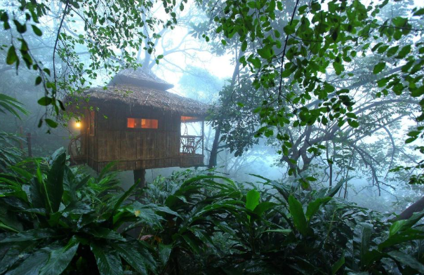
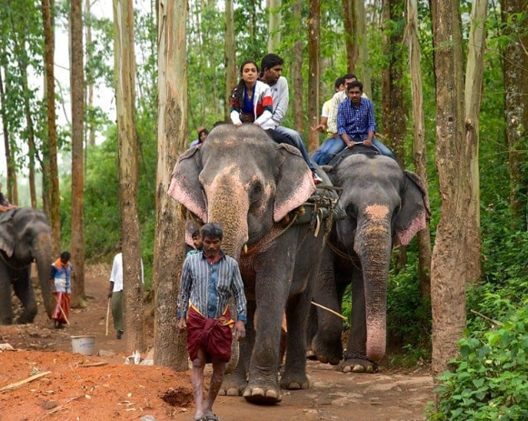
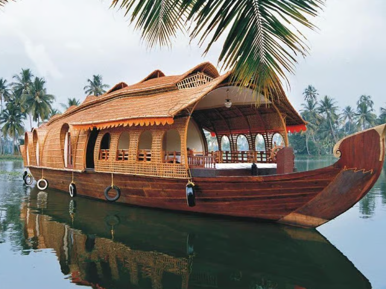
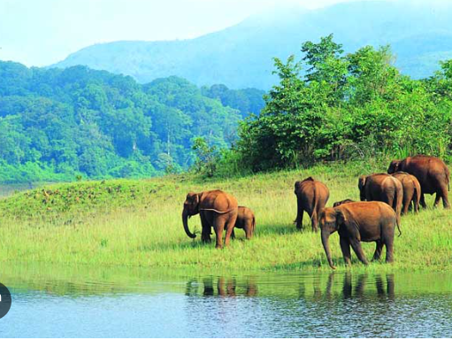
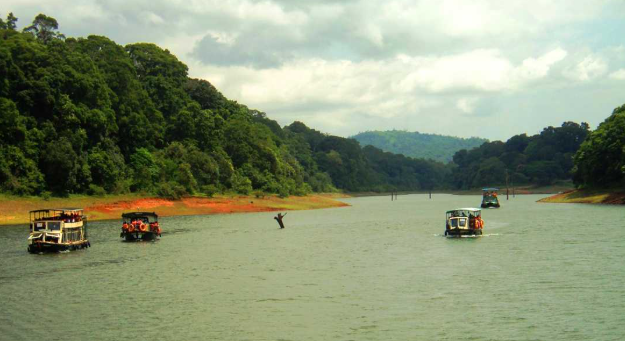

Thekkady is a famous tourist destination in the Idukki district of Kerala, known for its rich wildlife and dense forests. It is home to the Periyar Wildlife Sanctuary, where visitors can enjoy the beauty of nature and see different animals in their natural habitat. The peaceful environment and greenery make Thekkady a perfect place for nature lovers.
Thekkady is also popular for its exciting activities like tree tents, elephant rides, and boat trips. Visitors can stay in tree houses built on tall trees and enjoy a unique experience in the forest. Boat trips in the Periyar lake offer chances to see animals like elephants and deer. The combination of adventure, wildlife, and natural beauty makes Thekkady a must-visit place.





Thekkady is one of the most popular tourist destinations in Idukki District, Kerala. It is famous for the Periyar Wildlife Sanctuary, rich forests, beautiful hills, spice plantations and boating on Periyar Lake. Thekkady is one of India's best eco-tourism destinations and attracts visitors from around the world.
The name "Thekkady" is believed to be derived from the Malayalam word "Thekku", meaning teak tree. The region was once covered with dense teak forests, giving the place its name.
Thekkady became famous after the establishment of the Periyar Wildlife Sanctuary in 1950. Over the years, it developed into one of Kerala's leading eco-tourism destinations because of its wildlife, forests and natural beauty.
Periyar Wildlife Sanctuary is the main attraction of Thekkady. It is home to elephants, tigers, deer, wild boars, Indian bison, monkeys and hundreds of bird species. Visitors can enjoy wildlife safaris, bamboo rafting and nature walks.
Thekkady has evergreen forests, deciduous forests, bamboo groves, medicinal plants and a wide variety of trees. The forests support rich biodiversity and many rare plant species.
Today, Thekkady is one of Kerala's most famous wildlife and eco-tourism destinations. It attracts thousands of visitors every year for its forests, wildlife, boating, trekking, spice plantations and peaceful natural surroundings.